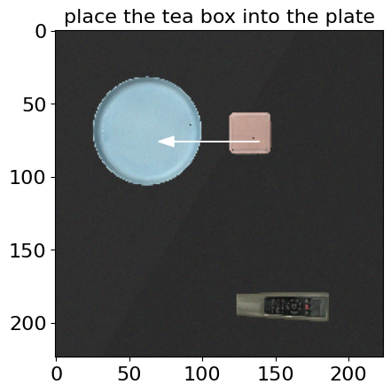
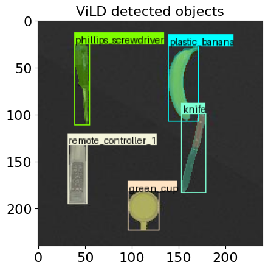

Video demonstration: Pick the blue box and put in the red bowl
This project involved building a sophisticated SayCan framework to enable a robotic arm to perform autonomous pick-and-place operations using high-level natural language instructions. The core of the system combines state-of-the-art Large Language Models (LLMs) with advanced vision-language detection models.
The system evaluates action choices using a combined scoring mechanism:
These scores are multiplied together, inherently penalizing actions that are linguistically logical but physically impossible in the current environment.
The image below illustrates the movement proposed by the LLM after evaluating semantic coherence and environmental affordance.

To improve scalability, new and previously unseen objects were introduced to the environment. I utilized ViLD to perform open-vocabulary object detection, extracting semantic labels and spatial locations without needing to retrain the recognition system from scratch.
The following image shows the insertion of a new object and its successful open-vocabulary recognition using ViLD.

A critical limitation of earlier LLM planners was their inability to recognize task completion (e.g., continuously trying to move blocks in a "Stack all the blocks" task, causing them to fall). I integrated a dynamic feedback system where ViLD continuously updates the scene state after every action. I also implemented custom geometric evaluation functions (like areblocksstacked) to verify the physical success of tasks, terminating the sequence automatically once conditions are met.